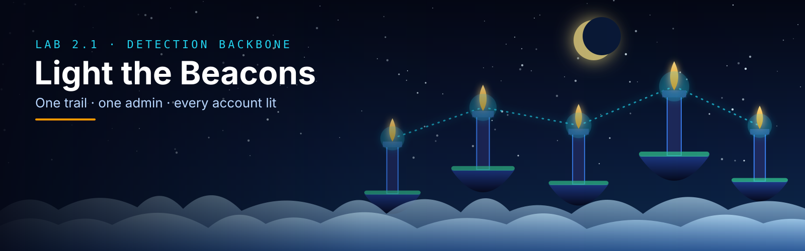
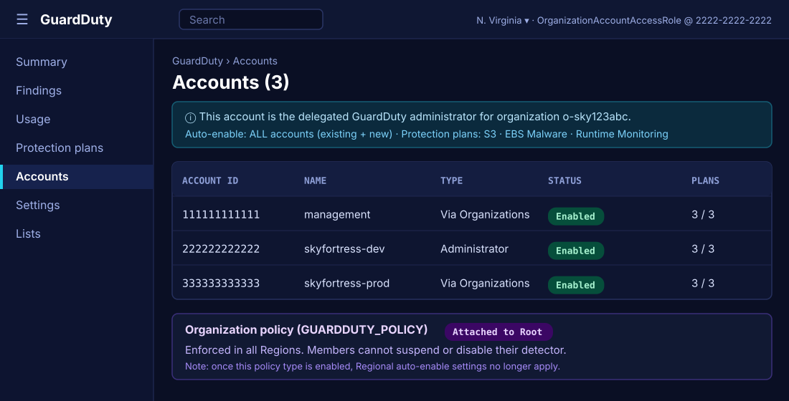

Light the Beacons 🔥
Goal: build the org-wide detection backbone from FIG 2.1. You'll delegate GuardDuty and Security Hub to skyfortress-dev, auto-enroll every account, create a tamper-resistant organization trail with surgical data-event selectors, and prove end to end that data events actually arrive.
Prerequisites: Lab 0 complete (org, sky-mgmt/sky-dev/sky-prod profiles, ~/.skyfortress.env). Files: labs/day2/lab1/.
Follow the 12 numbered steps. Each one ends with a command whose output you can check against the screenshots. About 60 minutes.
- ☐ Delegate GuardDuty and Security Hub (steps 1–2)
- ☐ Enroll every account, then lock it with a policy (3–4)
- ☐ Unified Security Hub on, home Region set (5)
- ☐ Immutable bucket, org trail, surgical selectors (6–8)
- ☐ Prove members can't blind you (9)
- ☐ Beacon lit and found: flag (10–11), integrity later (12)
Goal: every current and future account reports GuardDuty and Security Hub findings to skyfortress-dev, and an immutable org trail records management events plus S3 data events for the crown-jewels buckets.
- Constraints: the management account is not the admin of anything; data events only for
skyfortress-crown-jewels-*; no member can stop logging. - Done when:
list-delegated-administratorsshows$SKY_DEVtwice, every member isEnabled, the trail has three advanced selectors, andstop-loggingfromsky-prodfails. Then run steps 10–11 for the flag.
Steps
- Get your bearings
source ~/.skyfortress.env echo "mgmt=$(aws sts get-caller-identity --query Account --output text) dev=$SKY_DEV prod=$SKY_PROD" cd ~/skyfortress/labs/day2/lab1 && chmod +x *.sh *.py - Delegate security administration away from the management account
Why shouldn't the management account be your GuardDuty/Security Hub admin? Write down two reasons before you read on.
The management account can't be restricted by SCPs, and every person who logs into it is effectively an org owner. Analysts need day-to-day access to findings, and they shouldn't need the keys to the kingdom to get it. Delegate the work:
./org-detection-enable.sh "$SKY_DEV"The script trusts the GuardDuty, Security Hub and CloudTrail service principals in Organizations, then runs
guardduty enable-organization-admin-accountandsecurityhub enable-organization-admin-account. Read it first. You should never run a security script you haven't read.$ ./org-detection-enable.sh "$SKY_DEV" ==> Trusting security services at the Organizations level trusted: guardduty.amazonaws.com trusted: securityhub.amazonaws.com trusted: cloudtrail.amazonaws.com ==> Delegating GuardDuty administration to 222222222222 (us-east-1) ==> Delegating Security Hub administration to 222222222222 (us-east-1) Delegated admins now: ---------------------------------------- | ListDelegatedAdministrators | +---------------+----------------------+ | Id | Name | +---------------+----------------------+ | 222222222222 | skyfortress-dev | +---------------+----------------------+ ----------------------------------- | ListDelegatedServicesForAccount | +---------------------------------+ | guardduty.amazonaws.com | | securityhub.amazonaws.com | +---------------------------------+
Expected output (abridged). Account IDs in all screenshots are placeholders: 111111111111 management, 222222222222 dev, 333333333333 prod.
- Auto-enable GuardDuty for every account, present and future
AWS_PROFILE=sky-dev ./org-guardduty-config.sh==> Admin detector: 6ec8a1b2c3d4e5f60718293a4b5c6d7e ==> Org configuration now: { "AutoEnable": "ALL", "Features": [ { "Name": "S3_DATA_EVENTS", "Auto": "ALL" }, { "Name": "EBS_MALWARE_PROTECTION", "Auto": "ALL" }, { "Name": "RUNTIME_MONITORING", "Auto": "ALL" } ] } ==> Member accounts (may take a few minutes to show 'Enabled'): ------------------------------- | ListMembers | +---------------+-------------+ | Account | Status | +---------------+-------------+ | 333333333333 | Enabled | +---------------+-------------+
A member may show
Createdor be missing for a few minutes. That's normal; the hint below covers it.This calls
update-organization-configurationwith--auto-enable-organization-members ALLand turns on S3 Protection, EBS Malware Protection and Runtime Monitoring (with automated agent management) org-wide.ALLcovers existing members;NEWwould cover only future joiners. The management account is never auto-enrolled, so add it explicitly withcreate-membersas the script reminds you.Hint: list-members shows nothing
Auto-enrollment is asynchronous. Wait 2–5 minutes. If it's still empty, confirm in the management account that
aws guardduty list-organization-admin-accountsshows$SKY_DEVasENABLED. - The 2026 way: make enablement a policy, not a setting
Auto-enable is a setting. A determined admin in a member account (or the Kraken with that admin's keys) can still suspend a detector in an obscure Region. Since October 2026, an AWS Organizations GuardDuty policy (policy type
GUARDDUTY_POLICY) moves enablement into the org, where members can't override it from the console or API.You enable the
GUARDDUTY_POLICYtype on the root but haven't attached a policy yet. Next week a new account joins the org. Does step 3's auto-enable still enroll it?Reveal
No, not reliably. AWS documents that once the GuardDuty policy type is enabled, the Regional auto-enablement settings stop applying, even before you attach a policy. Enabling the type and attaching a policy is therefore one change, not two. Do them back to back.
- Prerequisites (done in steps 2–3): trusted access for GuardDuty and
$SKY_DEVas delegated admin. The delegated admin also needs the Organizations delegation policy that lets it manage GuardDuty policies. The GuardDuty console offers to create it for you. - In
sky-dev→ GuardDuty → Accounts (or Settings), find the organization-policy option and create a policy that enables GuardDuty in all Regions with the protection plans from step 3. Creating the first policy there enables theGUARDDUTY_POLICYtype for you. The CLI equivalent from the management account isaws organizations enable-policy-type --root-id "$SKY_ROOT_ID" --policy-type GUARDDUTY_POLICY. - Attach the policy to the Root.
- In
sky-prod, try to suspend the detector and record the error:aws guardduty update-detector --detector-id "$(aws guardduty list-detectors --profile sky-prod --query 'DetectorIds[0]' --output text)" --no-enable --profile sky-prod

SCREEN 2.1 What “done” looks like from the delegated admin. Illustrative mock-up; the live console layout may differ. Belt and braces: keep a Day 1-style SCP too, because SCPs also cover the API calls a declarative policy doesn't model:
{ "Version": "2012-10-17", "Statement": [{ "Sid": "ProtectDetectionPlane", "Effect": "Deny", "Action": [ "guardduty:DeleteDetector", "guardduty:DisassociateFromAdministratorAccount", "guardduty:UpdateDetector", "guardduty:CreateFilter", "guardduty:UpdateFilter", "securityhub:DisableSecurityHub", "securityhub:DisassociateFromAdministratorAccount", "cloudtrail:StopLogging", "cloudtrail:DeleteTrail", "cloudtrail:PutEventSelectors" ], "Resource": "*", "Condition": { "ArnNotLike": { "aws:PrincipalArn": "arn:aws:iam::*:role/skyfortress-security-breakglass" } } }] }Why deny CreateFilter?A GuardDuty filter with action
ARCHIVEis a suppression rule. An attacker who can create one can silently archive every future finding about themselves. That's defense evasion without ever touching the detector. - Prerequisites (done in steps 2–3): trusted access for GuardDuty and
- Turn on the unified Security Hub org-wide
The unified Security Hub is set up in two hops. (1) Management account → Security Hub → Get started → choose
skyfortress-devas the delegated administrator and let the console create the Organizations delegation policy. (2) Inskyfortress-dev, enable Security Hub, choose us-east-1 as the home Region, and include all accounts and the Regions you use. Then, under Security Hub CSPM, enable the AWS Foundational Security Best Practices standard through a central configuration policy (central configuration also lives in the home Region).Don't make the management account an adminAWS documents that if the management account is the delegated admin for Security Hub CSPM, it can't also be the delegated admin for the unified Security Hub. One more reason step 2 delegated everything to
sky-dev.Note the plan options. With Security Hub enabled, the Threat Analytics plan includes GuardDuty Runtime Monitoring (Oct 2026), so you're not billed separately for Runtime Monitoring.
Console labels driftSecurity Hub's console has changed a lot since 2025. If a button name differs, follow the intent: delegated admin → org-wide enablement → home Region → standards via central configuration.
- Create the log-archive bucket (immutable by design)
MGMT=$(aws sts get-caller-identity --query Account --output text) ORG=$(aws organizations describe-organization --query Organization.Id --output text) TRAIL_BUCKET="skyfortress-org-trail-$MGMT" aws s3api create-bucket --bucket "$TRAIL_BUCKET" --object-lock-enabled-for-bucket aws s3api put-public-access-block --bucket "$TRAIL_BUCKET" --public-access-block-configuration \ BlockPublicAcls=true,IgnorePublicAcls=true,BlockPublicPolicy=true,RestrictPublicBuckets=true # sandbox: GOVERNANCE 1 day (deletable with bypass). Production: COMPLIANCE, 365+ days. aws s3api put-object-lock-configuration --bucket "$TRAIL_BUCKET" --object-lock-configuration \ '{"ObjectLockEnabled":"Enabled","Rule":{"DefaultRetention":{"Mode":"GOVERNANCE","Days":1}}}' sed -e "s/__BUCKET__/$TRAIL_BUCKET/g" -e "s/__MGMT_ACCT__/$MGMT/g" -e "s/__ORG_ID__/$ORG/g" \ org-trail-bucket-policy.json > /tmp/trail-policy.json aws s3api put-bucket-policy --bucket "$TRAIL_BUCKET" --policy file:///tmp/trail-policy.json echo "export TRAIL_BUCKET=$TRAIL_BUCKET" >> ~/.skyfortress.envRead the policy. The
aws:SourceArnconditions stop other accounts' trails from writing into your bucket (confused deputy, Day 1 callback). The final statement denies deletes to everyone except a log-steward role that doesn't even exist yet. - Create the organization trail
aws cloudtrail create-trail --name skyfortress-org-trail \ --s3-bucket-name "$TRAIL_BUCKET" \ --is-organization-trail --is-multi-region-trail \ --enable-log-file-validation aws cloudtrail start-logging --name skyfortress-org-trail aws cloudtrail get-trail-status --name skyfortress-org-trail --query '{Logging:IsLogging,LastDelivery:LatestDeliveryTime}'$ aws cloudtrail get-trail-status --name skyfortress-org-trail --query '{Logging:IsLogging,LastDelivery:LatestDeliveryTime}' { "Logging": true, "LastDelivery": null }
LastDeliverystaysnulluntil the first log file lands, usually within 5–15 minutes. Re-run it before step 11. - Add surgical event selectors
Logging every S3 data event in a busy org can cost more than the workloads themselves. Advanced event selectors let you pay only for what matters: all management events, data events for the crown-jewels buckets only, and network activity events only when a VPC endpoint policy denies a call.
aws cloudtrail put-event-selectors --trail-name skyfortress-org-trail \ --advanced-event-selectors file://advanced-event-selectors.json aws cloudtrail get-event-selectors --trail-name skyfortress-org-trail \ --query 'AdvancedEventSelectors[].Name'$ aws cloudtrail get-event-selectors --trail-name skyfortress-org-trail --query 'AdvancedEventSelectors[].Name' [ "All management events (read + write)", "S3 data events - crown jewels only", "Network activity - VPC endpoint policy denials" ]
Secrets Manager
GetSecretValueand S3GetBucketPolicy: management or data events? Will they be logged with these selectors?Reveal
Both are management events (Secrets Manager's value reads are deliberately classified as management events, and
GetBucketPolicyis bucket-level, not object-level), so both are logged. That's why Lab 2.3 can hunt secret theft with no extra cost. - Prove a member can't blind you
You're an admin in
skyfortress-prod, which holds a copy of the org trail. Can you stop it? Predict the result, then try it.Reveal
No. Members can see an organization trail but can't stop, update or delete it. Copy the exact error message into your notes; it's evidence for your auditors that the control works.
TRAIL_ARN=$(aws cloudtrail describe-trails --trail-name-list skyfortress-org-trail \ --query 'trailList[0].TrailARN' --output text) aws cloudtrail stop-logging --name "$TRAIL_ARN" --profile sky-prodIt fails. Organization trails can only be changed from the management account (or a CloudTrail delegated admin). Note the exact error. In Lab 2.2, Stratus's
cloudtrail-stoptechnique will create and stop its own local trail, while yours keeps recording. - Light a beacon in prod and watch it arrive
AWS_PROFILE=sky-prod python3 beacon-ping.py aws guardduty create-sample-findings --profile sky-prod \ --detector-id $(aws guardduty list-detectors --profile sky-prod --query 'DetectorIds[0]' --output text) \ --finding-types 'Recon:EC2/PortProbeUnprotectedPort' 'Backdoor:EC2/C&CActivity.B!DNS'The beacon script writes and reads an object in
skyfortress-crown-jewels-<prod>, then knocks on a secret key that doesn't exist. The sample findings should show up insky-dev's GuardDuty console within a minute, and in Security Hub shortly after. - Find the beacon in the org trail
Wait 5–15 minutes for delivery (a good moment for coffee), then:
./find-beacon.sh "$TRAIL_BUCKET" "$SKY_PROD"You'll see a tab-separated list of S3 data events: two successful calls from
Owlsley-Beacon/1.0and one failedGetObject. The key of the failed knock is your flag (drop thebeacons/prefix).$ ./find-beacon.sh "$TRAIL_BUCKET" "$SKY_PROD" ==> syncing s3://skyfortress-org-trail-111111111111/AWSLogs/o-sky123abc/333333333333/CloudTrail/us-east-1/2026/11/24/ ==> 14 log files eventTime eventName errorCode key userAgent 2026-11-24T10:41:07Z PutObject - beacons/hello-from-owlsley.txt Boto3/1.x … Owlsley-Beacon/1.0 2026-11-24T10:41:08Z GetObject - beacons/hello-from-owlsley.txt Boto3/1.x … Owlsley-Beacon/1.0 2026-11-24T10:41:09Z GetObject NoSuchKey beacons/▓▓▓▓▓▓▓▓▓▓▓▓▓▓▓▓▓ Boto3/1.x … Owlsley-Beacon/1.0
The highlighted key is the flag, masked here. Object names and times will differ slightly.
Hint: nothing shows up
(1) Is
get-trail-statusshowingIsLogging: truewith a recent delivery time? (2) Org-trail paths include the org ID:AWSLogs/o-xxxx/<acct>/CloudTrail/us-east-1/YYYY/MM/DD/. (3) Did the selectors go in before you ran the beacon? Events that happened earlier aren't backfilled. - Prove integrity (do this at end of day)
Digest files are delivered hourly, so come back after lunch:
aws cloudtrail validate-logs --trail-arn "$TRAIL_ARN" \ --start-time "$(date -u -d '-3 hours' +%Y-%m-%dT%H:%M:%SZ)" --verbose | tail -5Every file should report
valid. In a real investigation, this output goes into your evidence package. It's how you show a court (or an auditor) that the timeline wasn't edited.
list-delegated-administrators shows $SKY_DEV for GuardDuty and Security Hub. Every member reports Enabled in GuardDuty. The org trail is logging with three advanced selectors. The beacon appears as a Data event in prod's log path. A member account can't stop the trail.
Troubleshooting
| Symptom | Likely cause | Fix |
|---|---|---|
enable-organization-admin-account → AccessDenied | Run from a member profile, or trusted access missing | Run step 2 with no profile (management). Re-run the script; it's idempotent. |
list-members empty after 5 min | Auto-enable is asynchronous, or the admin detector was created after the members joined | Re-run org-guardduty-config.sh, or add members explicitly with create-members. |
put-bucket-policy → MalformedPolicy | A placeholder wasn't substituted | grep __ /tmp/trail-policy.json should print nothing. Check $ORG and $MGMT. |
create-trail → InsufficientS3BucketPolicyException | Bucket policy missing the org-path statement | Re-apply step 6. The org path is AWSLogs/o-xxxx/*, not just AWSLogs/<acct>/*. |
find-beacon.sh prints 0 files | Delivery lag, or the beacon ran before the selectors | Wait 10 minutes, then re-run beacon-ping.py (events aren't backfilled). |
Network activity events for real. Create an S3 gateway or interface endpoint in a prod VPC with an endpoint policy that allows only principals where aws:PrincipalOrgID equals your org. Then call S3 through it with credentials from a different account (a friend's sandbox works). Find the VpceAccessDenied network activity event in the trail. That event is the one that catches foreign-credential exfiltration.
Keep everything. Days 3–5 and the GameDay depend on this backbone. GuardDuty and Security Hub run on free trials for 30 days. After the course: aws cloudtrail delete-trail --name skyfortress-org-trail, empty the bucket (aws s3api delete-objects … --bypass-governance-retention once the 1-day retention lapses), then guardduty disable-organization-admin-account and securityhub disable-organization-admin-account.